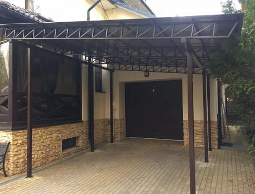
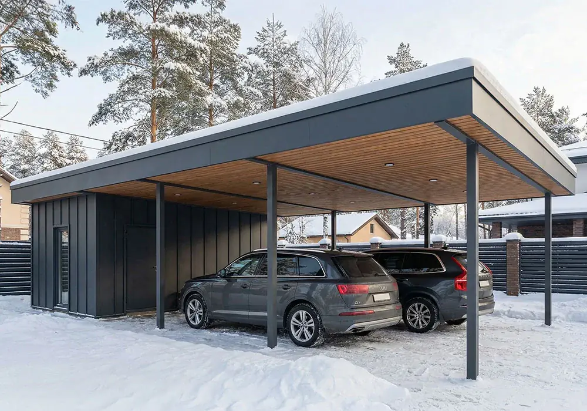
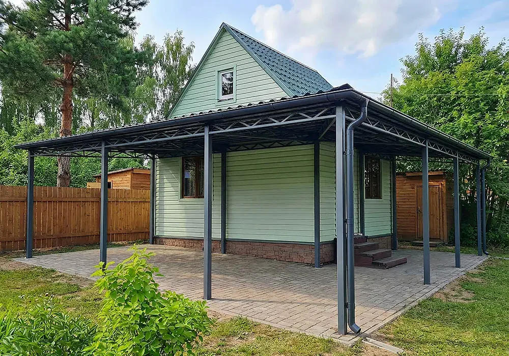
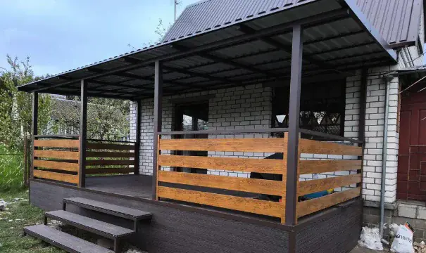
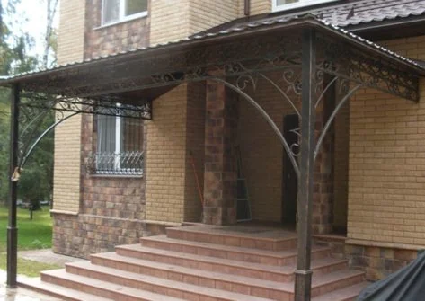
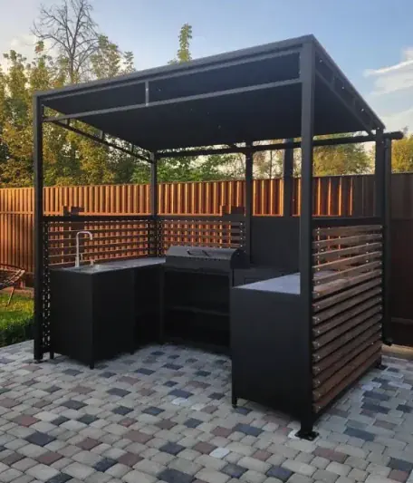
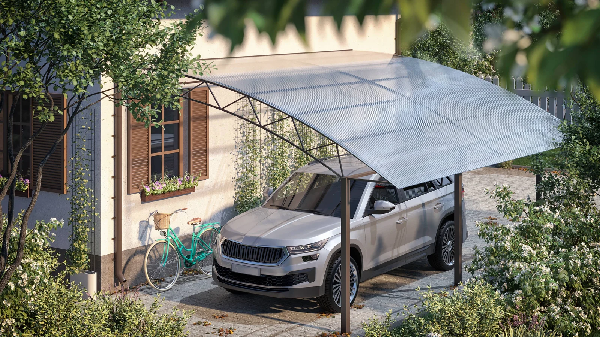
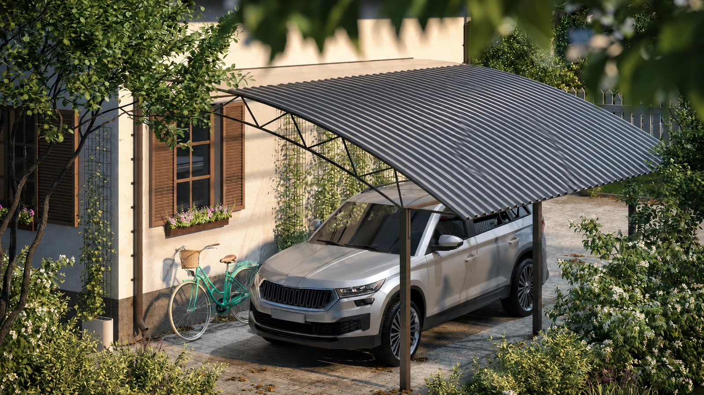
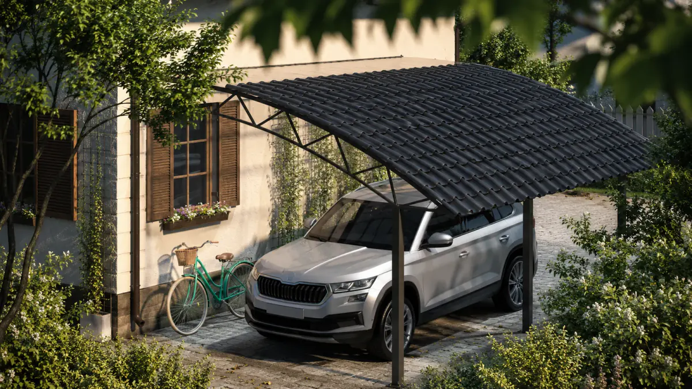

Замер и расчет
Подбираем размер, опоры, форму крыши и кровлю под участок, снеговую нагрузку и бюджет.
Изготавливаем навесы из металла под размеры участка, тип автомобиля, архитектуру дома и требуемую нагрузку. Подбираем форму крыши, профильную трубу, кровлю и способ монтажа под ключ.

Подбираем размер, опоры, форму крыши и кровлю под участок, снеговую нагрузку и бюджет.
Изготавливаем металлический каркас из профильной трубы и окрашиваем в цвет по RAL.
Привозим конструкцию, ставим опоры, фермы, кровлю, водосток и сдаем готовый навес.
Показываем не один общий навес, а понятные решения по задаче: для автомобиля, дома, террасы, крыльца, дачи и зоны отдыха.

Защита машины от дождя, снега, солнца, града и наледи.

Усиленный широкий навес для семейной или гостевой парковки.

Пристенная конструкция для парковки, крыльца или террасы.

Закрывает зону отдыха, летнюю кухню, патио или проход.

Компактный навес защищает дверь, ступени и входную площадку.

Крытая мангальная зона, летняя кухня или место отдыха.
Выбираем кровлю по свету, шуму дождя, внешнему виду, бюджету и сочетанию с домом или забором.

Легкая светопрозрачная кровля для автонавесов, террас, бассейнов и входных зон.

Прочное непрозрачное покрытие для авто, хозяйственных зон и коммерческих объектов.

Капитальный вид рядом с домом, особенно если основная крыша выполнена в похожем стиле.
Уточняем задачу, примерный размер, место установки и выезжаем на объект.
Подбираем форму крыши, сечение трубы, способ монтажа и кровельный материал.
Изготавливаем каркас, фермы и элементы обрешетки, готовим окраску по RAL.
Привозим конструкцию и материалы на участок в согласованный день.
Устанавливаем опоры, фермы, кровлю, водосток и дополнительные элементы.
Проверяем геометрию, крепления, примыкания и передаем готовый навес.
Напишите, сколько машин нужно закрыть, где будет стоять навес и какой материал кровли вам ближе. Можно прислать фото участка — подскажем, как лучше поставить опоры и отвести воду.
Позвоните или напишите в удобный мессенджер. Можно сразу отправить фото участка, размеры или коротко описать задачу.